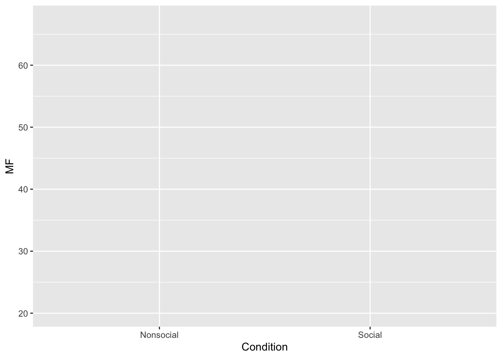

Dictionary
Annie
February 23, 2019
#Dictionary
##General bits 1. help(topic) This searches the R help desk and retrieves information about what you are searching for.
help("summary.aov") #provides a description of this function and general directions on how to use it- ?topic This function provides information about how particular pieces of syntax work.
?topic <- data.frame- ls() Not exactly sure what this function is doing but it appears to have created 2 lists based on previously existing values in the environment.
ls(1,2)## [1] "a" "A" "Ages" "all_data"
## [5] "aov_out" "Aversity" "b" "B"
## [9] "C" "Condition" "conds" "correct_answer"
## [13] "df" "DV" "dv_means" "dv_SEs"
## [17] "factor_one" "factor_two" "factor1" "Gender"
## [21] "i" "MF" "my_df" "Names"
## [25] "plot_df" "prev_congruency" "run_anova" "sim_rs"
## [29] "tmp" "x" "y"- dir() This lists the names of each file in the R project.
dir()## [1] "_site.yml" "class_notes_files"
## [3] "class_notes.html" "class_notes.Rmd"
## [5] "data_wrangling.html" "data_wrangling.Rmd"
## [7] "dictionary_files" "dictionary.html"
## [9] "dictionary.Rmd" "docs"
## [11] "ggplotgraphs_files" "ggplotgraphs.html"
## [13] "ggplotgraphs.Rmd" "images"
## [15] "index.html" "index.Rmd"
## [17] "journal_cache" "journal_files"
## [19] "journal.html" "journal.Rmd"
## [21] "lab_journal_website.Rproj" "links.html"
## [23] "links.Rmd" "README.md"
## [25] "Rprof.out" "site_libs"
## [27] "statistics_files" "statistics.Rmd"
## [29] "testfile.txt"- list.files() This function lists all the names of each file in a given R project.
list.files()## [1] "_site.yml" "class_notes_files"
## [3] "class_notes.html" "class_notes.Rmd"
## [5] "data_wrangling.html" "data_wrangling.Rmd"
## [7] "dictionary_files" "dictionary.html"
## [9] "dictionary.Rmd" "docs"
## [11] "ggplotgraphs_files" "ggplotgraphs.html"
## [13] "ggplotgraphs.Rmd" "images"
## [15] "index.html" "index.Rmd"
## [17] "journal_cache" "journal_files"
## [19] "journal.html" "journal.Rmd"
## [21] "lab_journal_website.Rproj" "links.html"
## [23] "links.Rmd" "README.md"
## [25] "Rprof.out" "site_libs"
## [27] "statistics_files" "statistics.Rmd"
## [29] "testfile.txt"##Input and output 1. save() This saves an R object to a file.
x <- 1
save("x", file = "testfile.txt")- load() This loads saved data.
load(file = "testfile.txt")- data() This function allows you to search for pre-made data sets in r ex.
?data
data()- library() This code allows you to access a package and insert it into your code. Then it allows your package to work for the code chunk. ex.
library(ggplot2)
Names <- rep(c("Dara", "Azalea", "Barbi", "Rowena", "Fiona"),each=2)
MF <- rnorm(10, 45, 25)
Condition <- rep(c("Social", "Nonsocial"), 5)
Aversity <- rep(c("A", "N_A"), times=c(4,6))
plot_df <- data.frame (Names, MF, Condition, Aversity)
ggplot(plot_df, aes(x=Condition, y=MF, group=Names,
linetype=Aversity))
- read.table() This reads a particular table and creates a data frame.
read.table(file = "testfile.txt")## Warning in read.table(file = "testfile.txt"): line 3 appears to contain embedded
## nulls## Warning in read.table(file = "testfile.txt"): incomplete final line found by
## readTableHeader on 'testfile.txt'## V1
## 1 RDX3
## 2 Xread.csv() This function also read a particular table and creates a data frame.
scan()
print() This function analyzes the results of your code (executing all the commands) ex.
data.frame(1,2,3,4)## X1 X2 X3 X4
## 1 1 2 3 4print(data.frame())## data frame with 0 columns and 0 rowscat()
write.table()
##Data Creation 1. c() This function is used to combine elements (factors in a vectore for example)
c(1,2,3,4,5)## [1] 1 2 3 4 5- from:to (where from and to are replaced with numbers, e.g. 1:10) This lists all the numbers in a specified range.
1:10## [1] 1 2 3 4 5 6 7 8 9 10- seq() Not exactly sure what is happening here but it appears that this function is using the first two numbers to help derive the third.
seq(2,10,7)## [1] 2 9- rep() This function replicates the first number the number of times that is designated in the second space
rep(1,10)## [1] 1 1 1 1 1 1 1 1 1 1- data.frame() This allows one to enter specific groups of data values ex.
data.frame(1, 2, 3, 5)## X1 X2 X3 X5
## 1 1 2 3 5- list() This provides a numbered list for all objects in a set.
list(2,6,1,3,8)## [[1]]
## [1] 2
##
## [[2]]
## [1] 6
##
## [[3]]
## [1] 1
##
## [[4]]
## [1] 3
##
## [[5]]
## [1] 8matrix()
factor()
rbind() This function allows you to bind a new row to an existing data frame
df <- rbind(df,
random_number=runif(dim(df)[1],0,1))- cbind() This funtion allows you to bind a new column to an existing data frame
df <- cbind(df,
random_number=runif(dim(df)[1],0,1))##Slicing and extracting data indexing vectors x[n] nth element x[-n] all but nth element x[1:n] first n elements x[-(1:n)] elements from n+1 to the end x[c(1,4,2)] specific elements x[“name”] elements named “name” x[x>3] all elements greater than 3 x[x > 3 & x < 5] all elements between 3 and 5 x[x %in% c(“a”,“and”,“the”)] all elements in given set
##Indexing lists x[n] list with elements n x[[n]] nt h element of the list x[[“name”]] element of the list named “name” x$name id.
##Indexing matrices x[i,j] element at row i, column j x[i,] row i x[,j] column j x[,c(1,3)] columns 1 and 3 x[“name”,] row named “name” Indexing data frames (matrix indexing plus the following) x[[“name”]] column named “name” x$nameid.
##Variable conversion as.data.frame(x) as.numeric(x) as.logical(x) as.character(x)
##Variable information 1.is.na(x) 2.is.null(x) 3.is.data.frame(x) 4.is.numeric(x) 5.is.character(x) 6.length(x) 7.dim(x) This funtion provides the number of rows and columns in a data frame without the data
library(dplyr)
df <- starwars
dim(df)## [1] 87 138.dimnames(x) This function lists the names of the categories in a data frame
library(dplyr)
df <- starwars
dimnames(df)## [[1]]
## [1] "1" "2" "3" "4" "5" "6" "7" "8" "9" "10" "11" "12" "13" "14" "15"
## [16] "16" "17" "18" "19" "20" "21" "22" "23" "24" "25" "26" "27" "28" "29" "30"
## [31] "31" "32" "33" "34" "35" "36" "37" "38" "39" "40" "41" "42" "43" "44" "45"
## [46] "46" "47" "48" "49" "50" "51" "52" "53" "54" "55" "56" "57" "58" "59" "60"
## [61] "61" "62" "63" "64" "65" "66" "67" "68" "69" "70" "71" "72" "73" "74" "75"
## [76] "76" "77" "78" "79" "80" "81" "82" "83" "84" "85" "86" "87"
##
## [[2]]
## [1] "name" "height" "mass" "hair_color" "skin_color"
## [6] "eye_color" "birth_year" "gender" "homeworld" "species"
## [11] "films" "vehicles" "starships"9.nrow(x) 10.ncol(x) 11.class() 12.attributes()
##Data selection and manipulation 1.which.max() 2.which.min() 3.which() 4.sort() 5.unique() 6.table() 7.sample()
##Math 1.max() This sets the maximum value included in a data set.
x <- c(1,2,3,4,5,10)
max(x)## [1] 102.min() This set the minimum value included in a data set.
x <- c(1,10,20,100)
min(x)## [1] 13.range() This determines the range of numbers considered in a set.
x <- c(1, 10, 20, 40, 100)
range(x)## [1] 1 1004.sum() This function adds all the numbers in a given set.
x <- c(1, 10, 20, 40, 100)
sum(x)## [1] 1715.mean() Creates the mean of a given set of number values.
x <- c(1, 10, 20, 40, 100)
mean(x)## [1] 34.26.median() calculates the median of a set of numbers.
x <- c(1, 10, 20, 40, 100)
median(x)## [1] 207.var() This calculates the variance of a set of values.
x <- c(1, 10, 20, 40, 100)
var(x)## [1] 1563.28.sd() This calculates the standard deviation of a set of values.
x <- c(1, 10, 20, 40, 100)
sd(x)## [1] 39.537329.cor() This calculates the correlation between groups of data.
x <- c(1, 10, 20, 40, 100)
y <- c(50, 60, 100, 200, 300)
cor(x,y)## [1] 0.972758710.round() This rounds a decimal to a specified number of decimals.
round(5.4567,1)## [1] 5.511.abs() This takes the absolute value of a given number.
abs(-20)## [1] 20##Matrices t() diag() rowSums() colSums() rowMeans() colMeans()
##Advanced Data processing apply() aggregate() Strings paste() strsplit() tolower() toupper
##Plotting hist() This function creates a histogram graph of a given set of data.
x <- c(1,20,50)
hist(x)
plot() This function creates a plot graph of a given set of data.
x <- cbind(c(1,2,3,4),c(10,20,30,40))
plot(x)
##Distributions rnorm() This function inserts a normal distribution.
rnorm(100, mean = 50, sd=2)## [1] 49.19703 49.04641 49.61168 52.23397 48.61055 53.14359 47.68273 50.37332
## [9] 49.47651 51.48597 49.17316 50.05820 49.71083 51.26788 52.01454 50.81042
## [17] 51.25121 48.01216 49.53074 49.12001 50.18184 50.35272 47.94920 49.42187
## [25] 46.99217 49.69337 52.60389 47.47279 50.39018 45.69813 49.73039 44.56192
## [33] 48.75636 51.09505 48.99095 47.42651 50.81242 48.58005 50.97902 50.97122
## [41] 48.52530 49.30451 47.89242 48.04020 50.96307 50.66012 50.35230 49.14508
## [49] 49.50655 50.67504 51.84343 50.86751 48.31878 53.74560 49.18433 48.01604
## [57] 48.19719 48.45614 48.59230 53.30026 48.35167 51.53286 52.00715 47.25177
## [65] 50.20493 46.60600 53.07483 50.82408 49.22824 52.15589 47.39406 51.35457
## [73] 49.45056 51.14016 50.95556 49.50926 48.56471 54.99952 48.21818 51.53246
## [81] 48.64641 49.37722 49.99594 48.29780 51.52384 50.22395 50.38259 46.85971
## [89] 47.86291 45.78010 47.42984 51.91903 49.20812 50.72005 46.66448 50.87294
## [97] 52.85756 50.57600 48.23077 51.76565runif()
##Programming show that you can define a function show that you can write a for loop show that you can write a while loop show that you can write an if else statement Explain what return() does inside a function, show you can use it Explain what break() does, show you can use it
##Installing some packages Use the packages tab in R-studio to install these packages. You will need to be connected to the internet when you do this. If you are installing on your laptop, or on R-studio Cloud, then these packages will not need to installed again.
1.ggplot2
library(ggplot2)2.dplyr
library(dplyr)3.shiny
4.data.table
library(data.table)##
## Attaching package: 'data.table'## The following objects are masked from 'package:dplyr':
##
## between, first, last5.reshape2
6.stringr